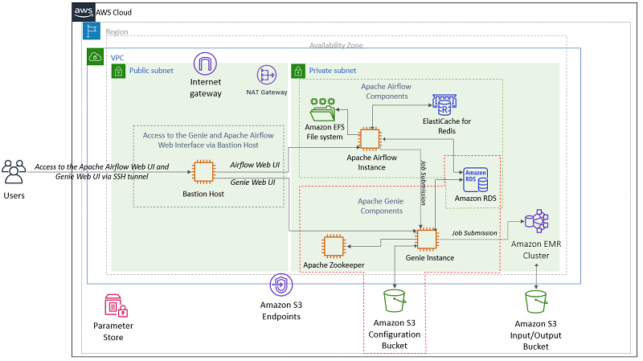
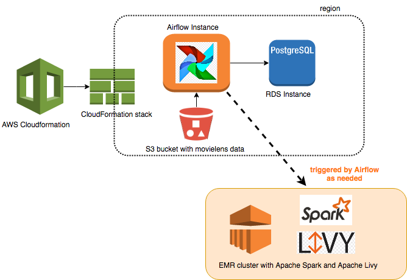
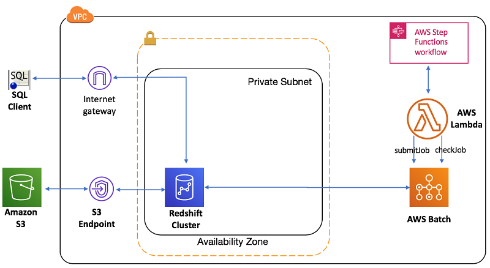

Created: 2020-05-25 Mon Last modified: 2022-05-14 Sat
Big Data Workflows on AWS¶
This post is an overview of few articles from AWS blog regarding Big Data Workflows
Orchestrate big data workflows with Apache Airflow, Genie, and Amazon EMR (Oct 2019)
Build a Concurrent Data Orchestration Pipeline Using Amazon EMR and Apache Livy (Jul 2018)
Orchestrate an ETL process using AWS Step Functions for Amazon Redshift (Jul 2019)
Orchestrate big data workflows with Apache Airflow, Genie, and Amazon EMR (Oct 2019)¶

CloudFormation Stack files:
Option 1¶
Apache Airflow + Genie + Amazon EMR and Amazon S3
Cluster
always-on clusters
transient clusters
Custom Airflow Operators:
GenieOperator
EMR Airflow Operator can be used to spin up Amazon EMR clusters that register with Genie, run a job, and tear them down
Option 2¶
Apache Airflow + Apache Livy + Amazon EMR
Build a Concurrent Data Orchestration Pipeline Using Amazon EMR and Apache Livy (Jul 2018)¶
Apache Airflow + Apache Livy + Amazon EMR
Apache Livy allow sending code (Scala or Python) over REST API calls
Spark allows parralel execution, EMR Step API runs jobs serially
Sample code uses non-reliable cluster termination, probably better to try EMR auto-termination
Orchestrate an ETL process using AWS Step Functions for Amazon Redshift (Jul 2019)¶
AWS Step Functions + AWS Lambda + AWS Batch
My notes¶
Complicated workflow management
Other Useful/Useless Stuff¶
AWS Data Pipeline¶
AWS Glue¶
Well-known workflow schedule tools¶
Apache Oozie
Apache Airflow
Azkaban
Cron